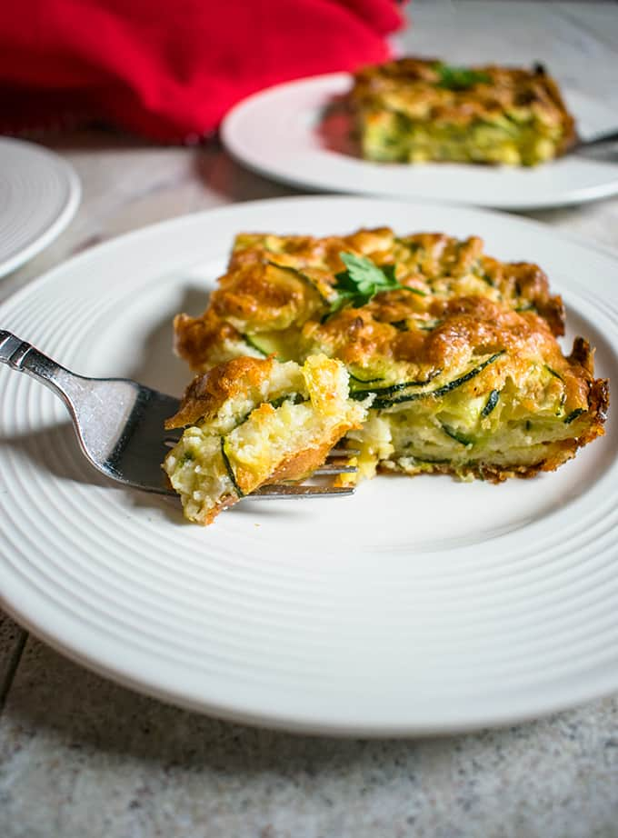

Italian zucchini bake

Description
This Italian Zucchini Bake is made from scratch with Pecorino Romano and
Parmesan! It's based on my Mom's zucchini casserole recipe that's a huge
family favorite. Make it for brunch, parties or a side dish!
Folks, you'll want to print out this zucchini recipe for keeps. This is a
from-scratch version of Mom's zucchini casserole, which she'd adapted from
the famous Bisquick dish.
It's not like all the rest.
Mom had the brilliant idea years ago to add Pecorino Romano, doubling the
amount of cheese and providing a nice flavor kick. She also increased the
oven temperature and baking time to produce a delicious browned crust.
I mean... Hello, Gorgeous!
Her version is excellent, and we've requested it over and over for
dinners, parties and brunches. But I gave up making recipes with baking
mixes a few years ago. (I avoid partially hydrogenated ingredients when
possible.) So, when I first started Cooking with Mamma C, I tried using
"homemade Bisquick" in this cheesy zucchini bake. And...it flopped.
Next time, I decided to go with just flour and baking powder to yield
baking-mix results. It took three more rounds, but I finally did it! I
wanted to release white smoke from my chimney, like when there's a new
Pope.
Ingredients
- 1 ½ pounds zucchini (3 medium ones; see notes)
- 1 small white onion
- 2 medium garlic cloves (pressed or finely chopped)
- ½ cup olive oil (or vegetable or canola)
- 4 eggs (I use extra-large)
- 1 cup all-purpose flour
- 4 teaspoons baking powder
- ½ cup freshly grated Parmesan cheese
- ½ cup freshly grated Pecorino Romano cheese
- ½ teaspoon salt
- ½ teaspoon pepper
- ¼ teaspoon dried basil
- butter to grease your pan
- fresh parsley for garnish (optional)
Instructions
-
Preheat your oven to 375 degrees F. Grease a 9x13 glass pan with butter.
-
Rinse your zucchini and slice off the tip and root ends. Pat your
zucchini dry with a paper towel. Leave the skin on.
-
Slice your zucchini into ⅛-inch rounds, using a mandoline, food
processor or paring knife. Place your zucchini slices into a large
mixing bowl.
-
Using paper towels, pat your zucchini slices and gently squeeze them to
absorb excess moisture. (This is key to prevent a soggy casserole.)
- Peel and finely chop your onion and add it to your bowl.
- Add your pressed garlic (or peel and chop it finely).
-
In a liquid measuring cup, add your oil, then beat in your eggs with a
fork. Pour the egg/oil mixture into your bowl with the zucchini.
-
Add your flour, baking powder, Parmesan, Romano, salt, pepper and basil
to your bowl.
-
Use a wooden spoon to carefully mix everything until combined well. Try
to separate any zucchini slices that are stuck together.
-
Transfer your zucchini mixture to your greased pan and smooth it out
evenly. Bake uncovered for 55-60 minutes, or until the entire top is
browned (but not burned).
-
Let the casserole rest for at least five minutes before slicing it.
Garnish with parsley, if desired.
- Store leftovers in the refrigerator for up to five days.